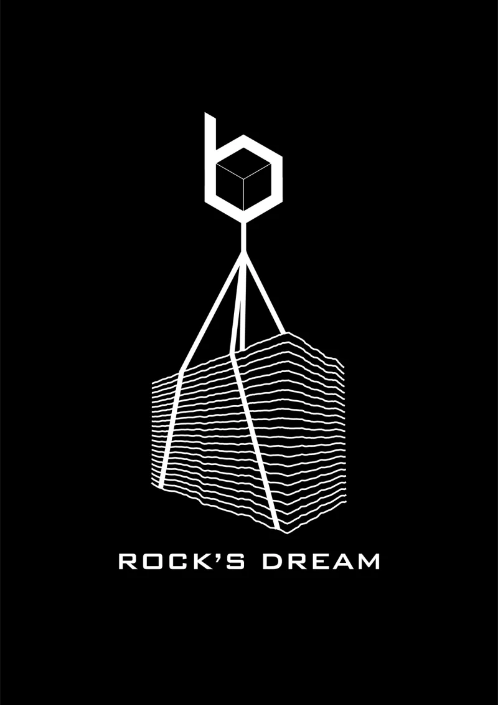
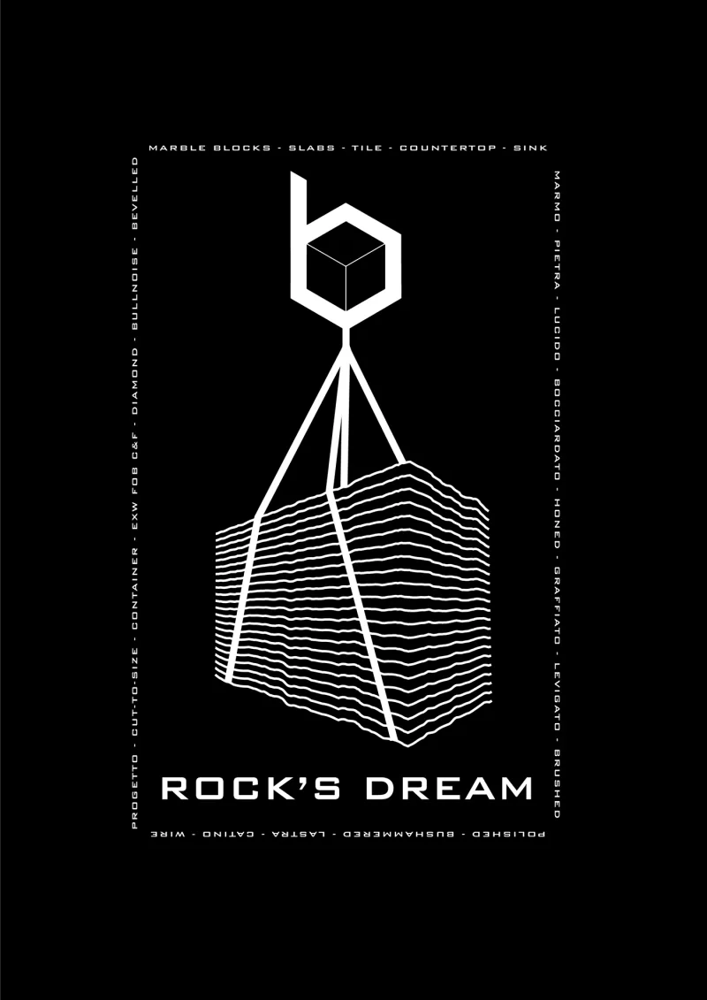

Commissioned shirt design
A commissioned shirt design for BLUE FOR MARBLE, a Sardinian marble company. The client used the design. A white geometric mark connects a cube to a stack of rippling lines. The “Rock’s Dream” lettering anchors the black composition; a second version adds a fine typographic border.
Original project on Behance


